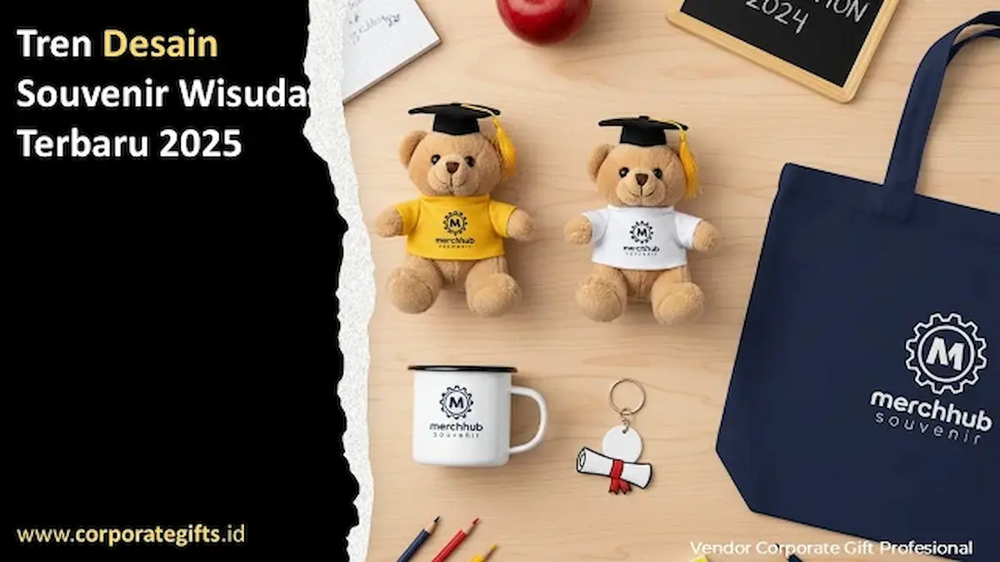

Corporate Gifts ID - Prosesi wisuda senantiasa menjadi puncak pencapaian akademik yang sarat akan rasa syukur, haru, dan kebanggaan keluarga. Di balik kemeriahan toga kelulusan, kehadiran souvenir wisuda memegang peranan krusial sebagai jembatan emosional yang mengabadikan ikatan almamater bagi para lulusan yang akan melangkah ke dunia profesional.
Poin Kunci Tren Souvenir Wisuda Terkini:
- Desain Minimalis Elegan: Mengedepankan bentuk geometris bersih, warna pastel lembut, serta finishing matte yang mewah.
- Integrasi Teknologi Interaktif: Pemanfaatan tautan QR code dan chip NFC untuk mengakses buku tahunan digital dan direktori alumni.
- Komitmen Keberlanjutan (Eco-Friendly): Dominasi material alami terbarukan seperti serat bambu, kanvas organik, dan kertas bersertifikasi ramah lingkungan.
- Harmonisasi Warisan Budaya Lokal: Penyelarasan motif batik, tenun nusantara, dan ukiran khas daerah dengan estetika modern.
Evolusi Cenderamata Kelulusan: Dari Simbolik Menuju Pengalaman Memorabilia
Selama beberapa dekade, cenderamata kelulusan identik dengan plakat vandel marmer atau boneka mini bertoga yang sering kali berakhir menumpuk debu di lemari pajangan. Namun saat ini, paradigma tersebut bergeser drastis. Institusi pendidikan tinggi negeri maupun swasta memandang cenderamata wisuda sebagai representasi mutu akademik dan inovasi kampus.
Wisudawan dari generasi digital mengharapkan cenderamata yang memiliki fungsi nyata dalam aktivitas harian mereka, mencerminkan gaya hidup kontemporer, serta memiliki nilai personalisasi yang autentik.
5 Pilar Tren dan Inovasi Souvenir Wisuda Masa Depan
Berdasarkan kurasi desain produk di CorporateGifts.ID, terdapat lima pilar utama yang mendominasi tren suvenir wisuda modern:
1. Desain Minimalis Elegan yang Berwibawa
Gaya minimalis elegan menekankan kesederhanaan proporsional, siluet ramping, dan palet warna netral (neutral earth tones) seperti abu-abu arang, krem gading, hijau sage, dan biru laut tua. Finishing permukaan berlapis matte atau sentuhan satin menghadirkan impresi premium saat disentuh. Contoh produk favorit meliputi tumbler vakum baja tahan karat dengan grafir inisial nama, bingkai foto akrilik tanpa tepi (frameless magnetic acrylic), dan wadah kartu nama berbahan logam monokrom.
2. Personalisasi Berbasis Teknologi (Smart Digital Gifting)
Sentuhan teknologi cerdas mentransformasikan suvenir fisik menjadi media interaktif berdimensi luas. Gantungan kunci pintar (smart keychain) berbalut kulit dengan pelat logam tertanam QR code unik memungkinkan wisudawan memindai tautan menuju galeri dokumentasi foto prosesi wisuda, video pesan khusus dari dekanat, hingga akses registrasi ikatan alumni kampus. Konsep ini menjadikan kenangan hari kelulusan tetap hidup dan dinamis di dalam ponsel pintar mereka.
3. Material Berkelanjutan dan Ramah Lingkungan
Kesadaran terhadap krisis iklim mendorong perguruan tinggi mengadopsi standar suvenir berwawasan lingkungan (sustainable merchandise). Pilihan bahan seperti komposit serat bambu, tas jinjing kanvas katun organik bebas pewarna kimia, serta buku agenda bersampul kulit gabus alami (cork material) menegaskan tanggung jawab etis almamater dalam mendidik generasi penerus bangsa yang sadar lingkungan.
4. Utilitas Ganda (Dual-Functionality Merchandise)
Suvenir yang sukses adalah barang yang senantiasa digunakan dalam rutinitas kerja pascakampus. Cangkir kopi termal (travel mug) dengan alas silikon antiselip, power bank kompak berlapis kayu maple, atau tas ransel laptop anti-air dengan kompartemen dokumen rapi menjadi investasi cenderamata yang paling dihargai oleh para sarjana baru saat menapaki jenjang karier pertama mereka.
5. Sentuhan Kearifan Budaya Nusantara
Menghadirkan ornamen tradisional nusantara ke dalam desain kontemporer memberikan karakter khas yang berwibawa. Aksen kain lurik tenun tangan pada selongsong tumbler, ornamen motif batik kawung halus pada boks kemasan kaku, atau tatakan cangkir dari kayu jati berukir motif geometris khas daerah memperkaya nilai filosofis kelulusan sebagai pengabdian kepada tanah air.
Tabel Matriks Komparasi Karakteristik Souvenir Wisuda
Tabel berikut menyajikan perbandingan komparatif antarpilar tren untuk membantu panitia wisuda memetakan prioritas pengadaan:
| Pilar Tren Wisuda | Karakteristik Desain Utama | Contoh Rekomendasi Produk | Nilai Manfaat bagi Lulusan |
|---|---|---|---|
| Minimalis Modern | Warna monokrom/pastel, finishing matte, bentuk simpel | Tumbler stainless SUS304 laser logo, akrilik frame foto | Tampilan estetis, berwibawa, dan serbaguna di meja kantor |
| Smart Tech NFC/QR | Tertanam chip digital atau laser QR code interaktif | Smart keychain logam-kulit, flashdisk kartu memori alumni | Akses cepat memorabilia digital dan jejaring karier alumni |
| Eco-Friendly ESG | Bahan serat alami terbarukan, biodegradable, tanpa plastik | Notebook bambu daur ulang, totebag kanvas blacu tebal | Mendukung gaya hidup hijau dan ramah lingkungan |
| Cultural Heritage | Penyelarasan pola batik/tenun daerah pada ornamen modern | Pouch batik modern, plakat kayu jati kombinasi logam kuningan | Memperkuat identitas kedaerahan dan rasa bangga nasional |

Detail pengerjaan presisi pada plakat logam dan aksesori digital menjamin cenderamata kelulusan tahan lama sepanjang hayat.
Tips Kurasi Pengadaan Souvenir Wisuda bagi Panitia Kampus
Menyelenggarakan pengadaan cenderamata dalam skala ribuan paket wisudawan menuntut ketelitian tinggi. Berikut panduan operasional dari kurator CorporateGifts.ID:
- Selaraskan dengan Pedoman Brand Guidelines Kampus: Pastikan warna boks kemasan dan aksen produk memakai kode warna resmi (hex color pantone) almamater.
- Lakukan Uji Aksesibilitas Fitur Digital: Jika menyematkan QR code atau tautan NFC, lakukan pengetesan di berbagai sistem operasi ponsel (Android & iOS) sebelum cetak massal.
- Gunakan Boks Kemasan Hardbox Kokoh: Kemasan luar yang rapi memberikan pengalaman unboxing yang berkesan bagi wisudawan bersama orang tua saat sesi foto studio.
- Jadwalkan Produksi Minimal 4 Pekan Sebelumnya: Mengingat periode wisuda biasanya berlangsung bersamaan antarkampus, pemesanan lebih dini mencegah keterlambatan kargo.
Pertanyaan Seputar Tren dan Inovasi Souvenir Wisuda (FAQ)
Kesimpulan dan Konsultasi Cenderamata Wisuda Bersama Desainer Ahli
Inovasi souvenir wisuda membuktikan bahwa cenderamata kelulusan dapat bertransformasi menjadi representasi kebanggaan almamater yang modern, fungsional, dan sarat nilai emosional. Menggabungkan teknologi digital dengan kemasan berwibawa akan membuat wisudawan Anda senantiasa mengingat jasa almamaternya ke mana pun mereka melangkah.
Wujudkan pengadaan paket wisuda universitas Anda bersama CorporateGifts.ID. Kami menyediakan layanan desain kustom lengkap, pembuatan sampel fisik dummy, dan kapasitas produksi massal bergaransi tepat waktu untuk institusi pendidikan di seluruh pelosok Indonesia.

Ditulis oleh: Sholikhatun Nikmah
Creative Product Designer & Bespoke Packaging ConsultantDesainer produk dan konsultan pengemasan eksklusif di CorporateGifts.ID. Berpengalaman merancang paket suvenir kelulusan universitas terkemuka di Indonesia, menyelaraskan identitas grafis almamater, serta mengintegrasikan fitur teknologi ke dalam kemasan cinderamata formal.
Lihat Profil Lengkap & Panduan Lainnya